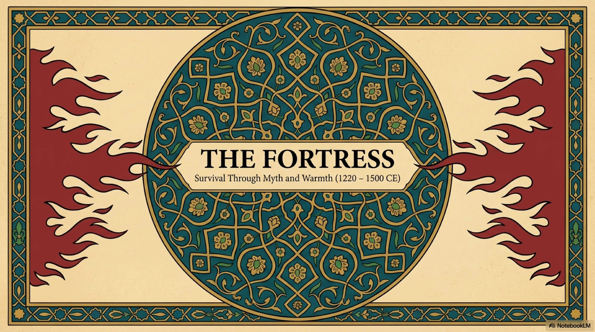
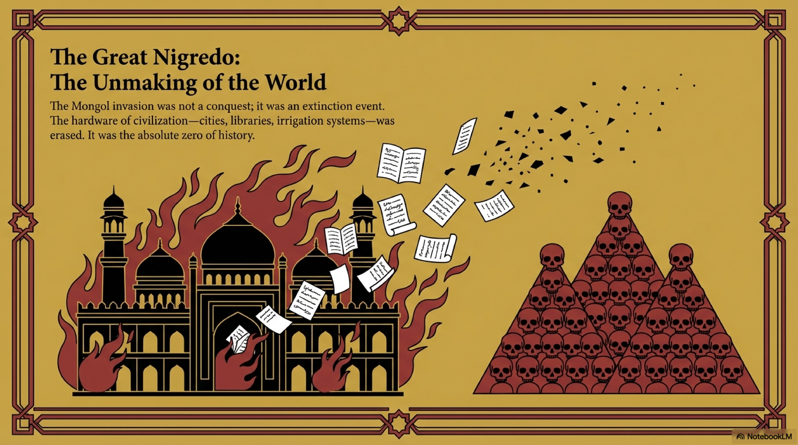
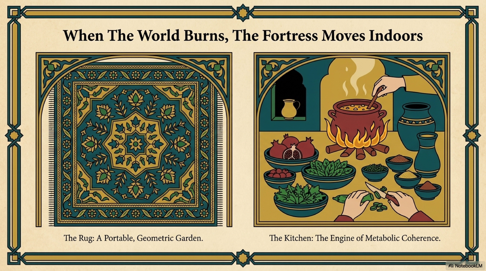
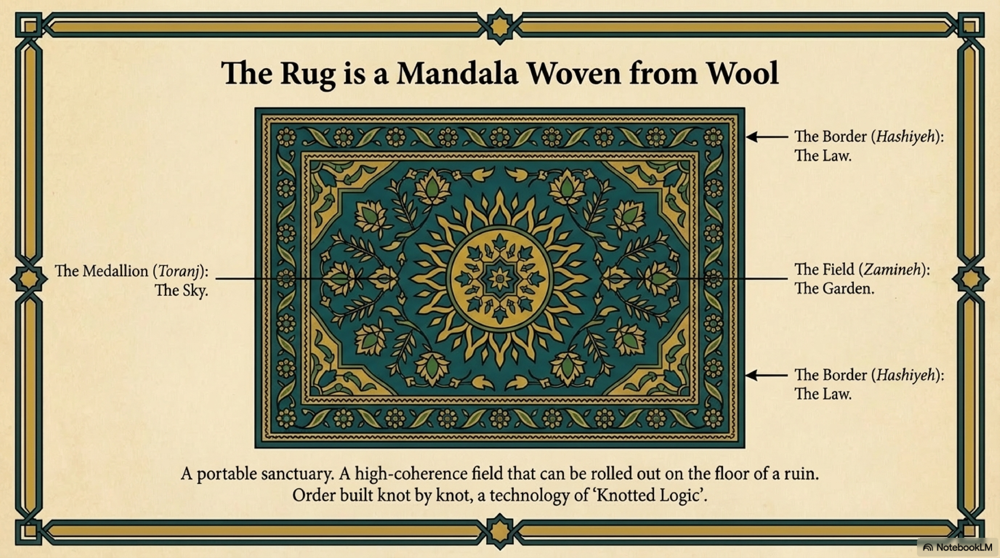
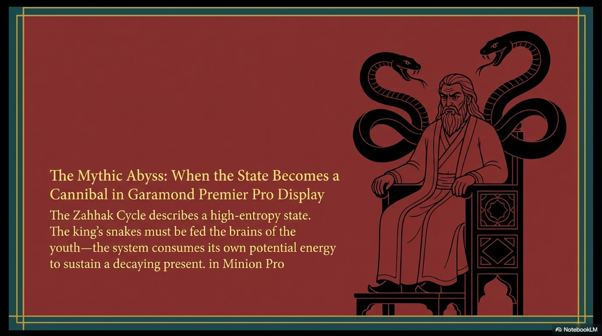
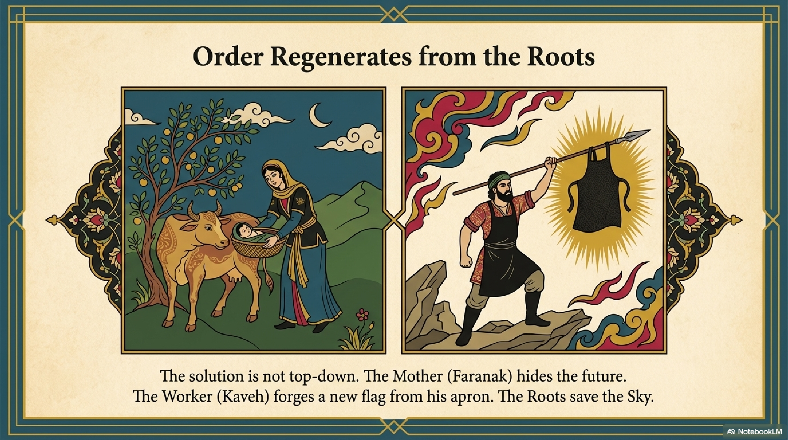

In the year 1191 AD, in the citadel of Aleppo, a thirty-six-year-old philosopher named Shihab al-Din Suhrawardi was executed. He was starved to death by order of Saladin’s son. His crime was not just heresy; it was an act of dangerous memory.
Suhrawardi, known as the Master of Illumination, or Sheikh Ishraq, is the pivot point of the Persian Mind. Before him, you had to choose. You were either a Peripatetic Philosopher, following Avicenna and Logic, or a Sufi Mystic, following Ghazali and Asceticism. You chose the Mind or the Heart.
Suhrawardi shattered this dichotomy. He argued that Logic and Mysticism are not enemies; they are two eyes of the same face.
To prove this, he claimed he was not inventing a new philosophy. He was resurrecting the Ancient Wisdom of Iran. He argued that before the Greeks, there was a lineage of Persian Sage-Kings who possessed a superior form of knowledge. He called this the Khusrawani Wisdom.
To understand the Physics of Light he built, we must first understand the King who walked into it.

At the center of Suhrawardi’s lineage stood the mythic figure of Kay Khosrow.
In the ancient epics, Kay Khosrow is the perfect King. He unites the world, defeats the demonic Afrasiyab, and establishes a reign of absolute justice. In our framework, he achieves Maximum Systemic Coherence. The empire is perfectly aligned.
But then, Khosrow does something that violates every rule of standard history. He realizes that if he stays on the throne, the entropy of the ego will inevitably corrupt the system. He sees that Power eventually eats Coherence.
So, he abdicates.
He hands the throne to a successor and rides out of the capital. He does not ride alone. He mounts Shabrang Behzad, the Night-Colored stallion who had carried his father through the fire. Together, they ride up a mountain into a blinding snowstorm.
And they vanish.
They do not die; they transition.
This is the first recorded instance of Civilizational Kenosis, or self-emptying.
Kay Khosrow understood that to save the Signal, he had to remove the Hardware. He uploaded himself to a higher plane of reality. And Shabrang was the vehicle of that upload. The horse proved that the "Body" of the culture—its strength, its loyalty, its drive—could follow the "Spirit" into the invisible.
Shabrang did not return to the stable. He entered the mist with his King, waiting in the Imaginal World for the moment he would be needed again.

Suhrawardi built his entire philosophy on this moment. He argued that Kay Khosrow possessed the Farr, or Divine Glory.
The Farr is one of the most untranslatable concepts in the Persian Mind. It is usually translated as Charisma or Destiny. But through the lens of FRC, the Farr is a Coherence Field.
It is a palpable, luminous energy that surrounds a leader who is perfectly aligned with the Cosmic Order. When the King has the Farr, nature blooms, armies win, and the kingdom is stable. The system is in resonance. When the King lies or commits tyranny, the Farr flies away. The field collapses. Entropy floods the system.
Suhrawardi analyzed the Farr not as a metaphor, but as a substance. He called it Light, or Nur.

Suhrawardi took the myth of Khosrow and turned it into the Physics of Light.
He argued that reality is not made of matter and form. It is made of Light. There is the Light of Lights, or God, which is maximum intensity. And there is Shadow, or Matter, which is light at near-zero intensity.
Everything in between is a gradient. Existence is not binary. It is analog.
Just as Kay Khosrow ascended from the throne to the mountain, the soul ascends by increasing its Luminous Intensity.

But Suhrawardi’s most critical contribution—the bridge that Ghazali couldn't find—was the discovery of where Kay Khosrow went.
He mapped Level 5, The Garden. He called it the Mundus Imaginalis, or the Imaginal World.
Western philosophy generally divides reality into two: The Sensible World of matter, and the Intelligible World of concepts.
Suhrawardi asked: Where do dreams go? Where do visions happen? Where do symbols live?
When you imagine a burning mountain, it is not physical, because it takes up no space. But it is not conceptual, because it has color, shape, and heat. It is not a definition; it is an image.
Suhrawardi posited a third world: the World of Suspended Images. It is a layer of the universe that exists between Matter and Pure Spirit. It is the realm where Spirit takes on a body of light to make itself visible, and where Matter dissolves into subtle forms to become intelligible.
This changed everything.
Before Suhrawardi, a symbol like the Fire in the temple was just a sign pointing to a truth. After Suhrawardi, the symbol was the truth, manifesting in the Imaginal World.
He taught that the human imagination is not a fantasy-generator. It is a Sensor. It is the organ of perception designed to read Level 5. When a poet uses a metaphor, they are not making it up. They are perceiving a real structure in the Imaginal World.

Suhrawardi died young, but he installed a new driver into the Persian Mind. He gave the civilization permission to trust its Imagination.
He validated Art, Poetry, and Myth not as entertainment, but as Gnosis.
Because of Suhrawardi, the Persians could look at the devastation of history—the burning cities, the slaughtered kings—and see them as shadows. They could retreat into the World of Inner Light and find a coherence that was suspended above the physical destruction.
He built the Cloud Storage for the civilization. Even if the hardware of Level 1 was smashed, the data was safe in the Imaginal Realm of Level 5.
But this realm was not empty. It was populated. It was filled with forces, intelligences, and guardians.
Suhrawardi called them Angels. We call them Attractors. And the next chapter is about the physics of their influence.